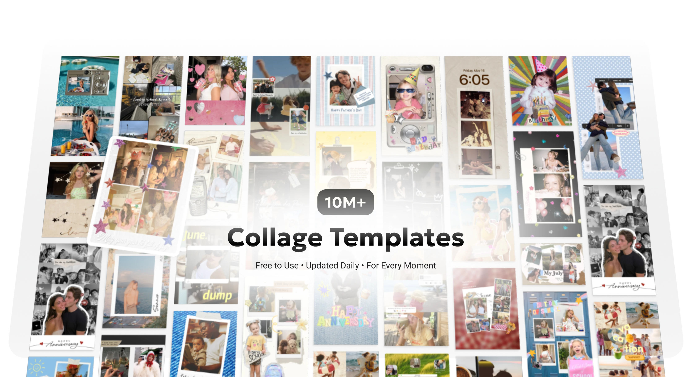

PhotoGrid 这几年在往哪走——从拼图 App 到 AI 创作工具的进化观察
从一个做九宫格拼图的小工具，到今天内置千款滤镜、AI 自动拼贴、描述式生成的全能创作平台，PhotoGrid 的迭代节奏里藏着社媒创作工具的演进方向。
开篇：现在这版是什么样
前阵子从官方下载装好 PhotoGrid 想做一组旅行照片的九宫格，发现首页已经不是几年前那个"选模板→塞照片→导出"的简单流程了。AI 生成、AI 拼贴、AI Agent 描述式出图——三个带 AI 前缀的入口排在最显眼的位置，而我印象中那个"3×3 网格模板"反而被挤到了模板库的深处。
这大概就是 PhotoGrid官网 近几年最直观的变化：它不再只是一个拼图工具，而是在往一个"社媒创作全能平台"的方向猛冲。但冲到现在这个状态，中间并不是一帆风顺的线性升级——从样本文档里能看到几个很有意思的时间节点和转折，值得拉出来复盘一下。
起步：拼图工具的本分
PhotoGrid 最早的定位非常清晰：帮用户把多张照片快速拼成一张图，方便发到各种社交平台。这个阶段的核心竞争力就是模板多——各种网格布局、拼贴样式、适配不同平台尺寸的预设模板，加上简单的间距和圆角调节，让普通人也能做出看起来"排版过"的图片。
从今天的视角回望，这个时期的 PhotoGrid 做的是一个典型的"效率工具"：把"摆照片"这件事标准化、流程化。用户的需求也很直接——九宫格发 Instagram、长图发朋友圈、几张回忆照拼在一起发微博。PhotoGrid 把这些场景做成了一键化的模板，靠量取胜。
第一次转向：从"摆位置"到"调感觉"
什么时候 PhotoGrid 开始不满足于"摆照片"的？样本文档里有一个很明显的信号：滤镜库扩充到了 1000+ 款，并且按风格做了细致分类——清新日系、复古胶片、Y2K 千禧、黑白、冷色调、暖色调、人像美颜……这已经不是简单加个滤镜的层次了，而是在构建一套完整的色彩语言体系。
对应的功能也在上一个台阶：全局滤镜 / 单张滤镜 / 封面滤镜三种应用方式，加上滤镜强度可调节（0%-100%），再往下还有手动色彩参数调节——亮度、对比度、饱和度、色温、色调、锐度、高光、阴影、褪色、暗角……这一套下来，已经摸到了专业修图软件的门槛。
我记得这个阶段有一个很强的产品信号：样本文档里写了"间距 12px + 圆角 12px 视觉最协调"、"滤镜强度设为 40% 最自然"这类经验性内容——说明开发团队已经在从"提供功能"转向"引导审美"了。这是一个从工具到产品的重要拐点。
AI 介入：最激进的一次升级
如果说滤镜体系是产品层的延伸，那 AI Collage 和 AI Agent 的出现，就是 PhotoGrid 历史上最激进的一次升级。样本文档里明确提到 AI Collage 是 2025 年新增——用户上传一批照片，AI 自动生成创意拼图，建议 3-8 张效果最好。再往后，AI Agent 更进一步：用自然语言描述需求，比如"帮我做一套 Instagram 九宫格，主题旅行，清新蓝色调，间距 8px，圆角 0"，Agent 就直接生成好九张图。
这意味着什么？之前所有版本的核心操作流程都是"用户手动操作软件"——选模板、拉间距、调参数、加滤镜。AI 介入后，这个流程变成了"用户描述意图，软件帮你做"。这不是加了一个功能按钮，而是整个交互范式的变化。
有意思的是，AI 并没有完全取代手动操作。样本文档里手动调色、间距圆角微调、模板库搜索这些传统功能依然完整存在。看起来团队的策略是：AI 做"第一次出图"，用户手动做"最后一公里调整"——两条腿走路，既满足了图省事的用户，也留住了对细节有追求的创作者。
从迭代节奏看团队的优先级
把这些版本变化按时间线串起来看，有几件事特别值得注意：
第一，社交平台适配始终是最高优先级。 Instagram 九宫格、Stories 9:16、Reels 封面、Carousel 轮播模板——样本文档里专门有一整套 Instagram 生态模板的说明，甚至包括"九宫格发布顺序"这种运营层面的细节。PhotoGrid 的根始终扎在社媒生态里，不是一个纯粹的修图工具。
第二，"一键化"是贯穿始终的产品理念。 早期是"一键选模板→一键拼图→一键导出"，后来是"一键加滤镜→一键调风格预设"，到现在是"一句话让 AI 出图"。不管底层技术怎么变，降低社媒创作门槛这件事，团队从来没有放松过。
第三，有些东西一直没怎么变。 比如"间距和圆角不支持单张独立设置"（样本文档明确写了"目前不支持"），还有照片数量上限（传统网格最多 16 张，视频最多 9 段）。想搞清这类参数层面的细节，去PhotoGrid文档翻一下就能找到完整说明。这些限制从最早的版本延续到现在，说明团队一直在权衡"灵活性"和"易用性"——给太多自由反而增加决策负担。
现状里的几个观察
走到今天这一步，PhotoGrid 有几个有意思的状态：
一方面，它的功能覆盖面已经非常广——拼图、滤镜、色彩调节、视频拼贴、AI 生成、模板市场、社交平台适配……几乎囊括了社媒创作从"素材准备"到"发布"之前的全部环节。
另一方面，这种"全"也带来了定位上的模糊。它到底是一个"拼图 App"、还是"AI 创作工具"、还是"社媒内容全能套件"？样本文档里既有最基础的"九宫格怎么做"教程，也有最前沿的"AI Collage 使用指南"——说明团队自己也在探索这个边界。
还有一个细节：样本文档里的色彩调节表、间距圆角组合效果速查表、九宫格发布顺序图——这些面向用户的实用内容越来越丰富。从产品到生态，PhotoGrid 似乎在往"工具 + 社区"的方向走，至少在内容建设上是这样。

预判：照这个路线，下一步大概率会怎么走
说几个从迭代规律推的观察，不当官方口径传：
AI 能力会继续下沉到每一个环节。 现在 AI Collage 和 AI Agent 还是两个独立入口，下一步很可能把 AI 能力嵌入到现有流程里——比如在选模板的时候给 AI 推荐模板、在调间距的时候 AI 建议参数、在导出的时候 AI 自动适配不同平台的尺寸和色调。不是"有一个 AI 功能"，而是"所有功能都带 AI 辅助"。
工具和社区的边界会越来越模糊。 现在的模板库、经验文档已经有社区内容的味道了。下一步可能会有用户生成模板的分享机制，或者基于用户创作数据的个性化推荐——让用户自己成为产品的一部分。
专业级功能和入门级功能会长期共存。 手动色彩调节的十一个参数不会删，因为总有用户想精确控制每一个细节；AI 一键出图也不会停，因为社媒创作的核心需求还是"快速出活"。两条线并行，谁也不取代谁。
最后
回看这几年 PhotoGrid 的迭代，最有意思的不是某个具体功能加了什么，而是它在"工具"和"平台"之间来回拉扯的姿态。从拼图到滤镜到 AI，它一直在跟着社媒生态的变化调整自己的重心，但"帮普通人用最短时间做出能发的内容"这件事，从第一天就没变过。
对于我们这些还在用 PhotoGrid 做九宫格、拼旅行照片、给孩子做成长记录的用户来说，它是不是"AI 创作平台"其实不重要——重要的是每次打开，都能找到刚好够用的工具。
样本文档里的版本时间线和功能演变，以及日常使用中的观察，整理了这些变化轨迹。这套资料同步放在 GitHub、Gitee、GitCode 三个仓库，国内访问哪个顺手用哪个。